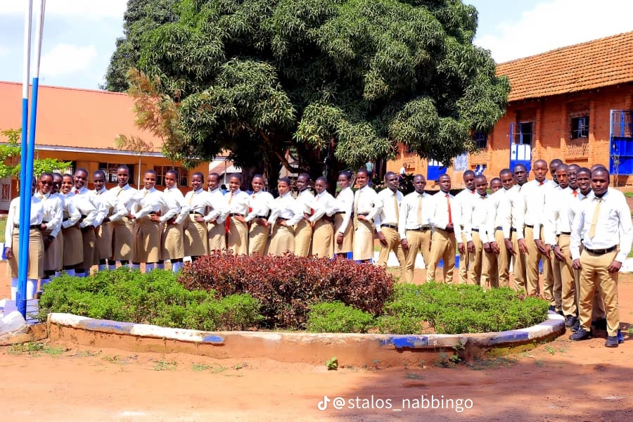
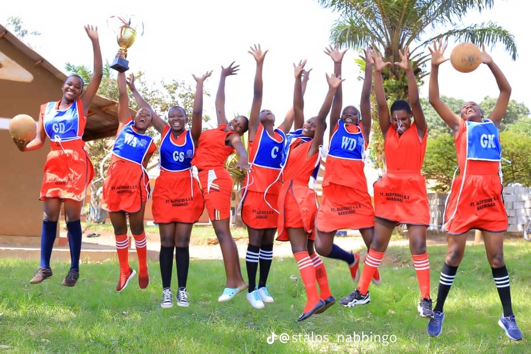
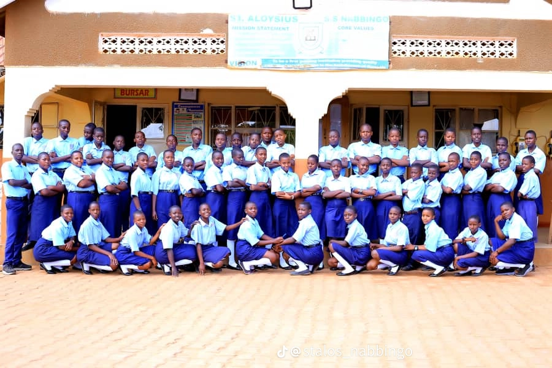

Students
Nabbingo · Since 1986 · 40 years
Knowledge is our strength
St. Aloysius Senior Secondary School is a mixed day and boarding Catholic school providing quality, affordable education in the Archdiocese of Kampala.



Boarding
Teachers
Years of service
Experience STALOS
A glimpse of life on campus.
Why families choose STALOS
A growing school with clear values, steady leadership, and a commitment to holistic education.
Quality Academics
O-Level and A-Level programmes with a focus on strong results and practical skills.
Values & Character
Catholic foundation that welcomes all, forming disciplined, responsible young people.
Skills for Life
Vocational training, music, sports, and clubs that prepare students beyond the classroom.
Growing with purpose
Recent improvements that make a real difference for students.
Facilities
Main hall completed, reliable water system installed, kitchen and toilets renovated, classrooms and dormitories refreshed. A new multi-storey building and perimeter wall are the next priorities.
Student Life
Active music and choir tradition recognised across the Archdiocese, vocational skills programmes, games, clubs, and a revived Parents and Teachers Association working closely with the school.
From our community
"STALOS was not just a place of learning; it was a community that nurtured my dreams, shaped my values, and equipped me with the skills to face the world."
"Your leadership has brought about significant improvements in academic performance, and we are proud to see our students shining both academically and in their personal development."
Join us